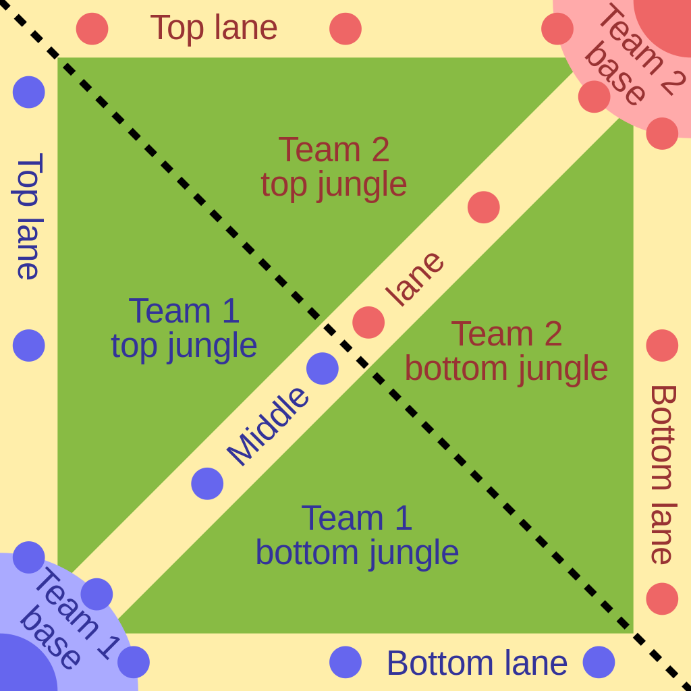

Gameplay itself unfolds on one of several maps, the most common being the Summoner’s Rift. Summoner’s Rift. The map consists of three primary “lanes” leading directly from each team’s central home base, or “nexus” to the others. In between the lanes is the “jungle” a forested area where stationary mobs are found. Bifurcating the map is the “river”, which players can travel from the jungle or one of the lanes. Each player has a small “minimap” in the corner of the screen which allows them to see the entire gameplay area. Players can “ping” specific areas on the minimap, which can be used for various reasons, After the match begins, “creep waves” begin emerging from each team’s nexus and marching down each of the lanes. To gain experience and gold players can kill opposing teams’ creeps, neutral monsters found in the jungle, and opposing teams’ champions. After a champion or neutral monster is killed, a period of time must pass before it can respawn and rejoin the game. The lanes on each team’s side of the river are protected by towers, which shoot at enemy champions and creep waves alike. The goal of the game is to push forward down these lanes, destroying the towers and eventually the nexus that they protect. The map and timing of creep waves are always the same, the only variation on the players’ side is on which end they start: the purple/red team to the top right of the map and the blue team to the bottom left.
A simplified representation of Summoner's Rift. The yellow paths are the "lanes" down which minions march; blue and red dots represent turrets. The fountains are the dark areas within each base, and are beside each Nexus. The dotted black line indicates the river.